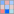

Measuring Fabry-Perot fringes#
This example shows how to measure Fabry-Perot fringes using the image processing features of DataLab:
Load an image of a Fabry-Perot interferometer
Define a circular region of interest (ROI) around the central fringe
Detect contours in the ROI and fit them to circles
Show the radius of the circles
Annotate the image
Copy/paste the ROI to another image
Extract the intensity profile along the X axis
Save the workspace
First, we open DataLab and load the images:

Open the image files with “File > Open…”, or with the  button in
the toolbar, or by dragging and dropping the files into DataLab (on the panel on
the right).#
button in
the toolbar, or by dragging and dropping the files into DataLab (on the panel on
the right).#

Select the test images “fabry_perot1.jpg” and “fabry_perot2.jpg” and click “Open”.#
The selected image is displayed in the main window. We can zoom in and out by pressing the right mouse button and dragging the mouse up and down. We can also pan the image by pressing the middle mouse button and dragging the mouse.

Zoom in and out with the right mouse button. Pan the image with the middle mouse button.#
Note
When working on application-specific images (e.g. X-ray radiography images, or optical microscopy images), it is often useful to change the colormap to a grayscale colormap. If you see a different image colormap than the one shown in the figure, you can change it by selecting the image in the visualization panel, and the selecting the colormap in the vertical toolbar on the left of the visualization panel.
Or, even better, you can change the default colormap in the DataLab settings by selecting “Edit > Settings…” in the menu, or the button in the toolbar.
{kind=link}

Select the “Visualization” tab, and select the “gray” colormap.#
Then, let’s define a circular region of interest (ROI) around the central fringe.

Select the “Edit regions of interest” tool in the “Computing” menu.#

The “Regions of interest” dialog opens. Click “Add region of interest” and select a circular ROI. Resize the predefined ROI by dragging the handles. Note that you may change the ROI radius while keeping its center fixed by pressing the “Ctrl” key. Click “OK” to close the dialog.#

Another dialog box opens, and asks you to confirm the ROI parameters. Click “OK”.#

The ROI is displayed on the image: masked pixels are grayed out, and the ROI boundary is displayed in blue (note that, internally, the ROI is defined by a binary mask, i.e. image data is represented as a NumPy masked array).#
Now, let’s detect the contours in the ROI and fit them to circles.

Select the “Contour detection” tool in the “Computing” menu.#

The “Contour” parameters dialog opens. Select the shape “Circle” and click “OK”.#

The “Results” dialog opens, and displays the fitted circle parameters. Click “OK”.#

The fitted circles are displayed on the image.#
Note
If you want to show the computing results again, you can select the “Show results”  entry in the “Computing” menu, or the “Show results” button, below the image list:
{kind=link}

The images (or signals) can also be displayed in a separate window, by clicking on
the “View in a new window” entry in the “View” menu (or the  button in
the toolbar). This is useful to compare side by side images or signals.
button in
the toolbar). This is useful to compare side by side images or signals.

The image is displayed in a separate window. The ROI and the fitted circles are also displayed. Annotations can be added to the image by clicking on the buttons at the bottom of the window. The annotations are stored in the metadata of the image, and together with the image data when the workspace is saved. Click on “OK” to close the window.#

The image is displayed in the main window, together with the annotations.#
If you want to take a closer look at the metadata, you can open the “Metadata” dialog.

The “Metadata” button is located below the image list.#

The “Metadata” dialog opens. Among other information, it displays the annotations (in a JSON format), some style information (e.g. the colormap), and the ROI.#
Now, let’s delete the image metadata (including the annotations) to clean up the image.

Select the “Delete metadata” entry in the “Edit” menu, or the  button in the toolbar.#
button in the toolbar.#

The “Delete metadata” dialog opens. Click “No” to keep the ROI and delete the rest of the metadata.#
If we want to define the exact same ROI on the second image, we can copy/paste the ROI from the first image to the second image, using the metadata.

Select the “Copy metadata” entry in the “Edit” menu, or the  button in the toolbar.#
button in the toolbar.#

Select the second image in the “Images” panel, then select the “Paste metadata”
entry in the “Edit” menu, or the  button in the toolbar.#
button in the toolbar.#

The ROI is added to the second image.#

Select the “Contour detection” tool in the “Computing” menu, with the same parameters as before (shape “Circle”). On this image, there are two fringes, so four circles are fitted. The “Results” dialog opens, and displays the fitted circle parameters. Click “OK”.#

The fitted circles are displayed on the image.#
To extract the intensity profile along the X axis, we have two options:
Either select the “Line profile…” entry
 in the
“Operations > Intensity profiles” menu.
in the
“Operations > Intensity profiles” menu.Or activate the “Cross section” tool
 in the vertical toolbar
on the left of the visualization panel.
in the vertical toolbar
on the left of the visualization panel.
Let’s try the first option, by selecting the “Line profile…” entry :
that is the most straightforward way to extract a profile from an image, and it
corresponds to the compute_profile method of DataLab’s API (so it can be used
in a script, a plugin or a macro).
Select the “Line profile…” entry in the “Operations” menu.#

The “Profile” dialog opens. Enter the row of the horizontal profile (or the column of the vertical profile) in the dialog box that opens. Click “OK”.#

The intensity profile is added to the “Signals” panel, and DataLab switches to this panel to display the profile.#
If you want to do some measurements on the profile, or add annotations, you can
open the signal in a separate window, by clicking on the “View in a new window”
entry in the “View” menu (or the button in the toolbar).

The signal is displayed in a separate window. Here, we added vertical cursors and a very interesting text label. As for the images, the annotations are stored in the metadata of the signal, and together with the signal data when the workspace is saved. Click on “OK” to close the window.#
Now, let’s try the second option for extracting the intensity profile along the X axis,
by activating the “Cross section” tool in the vertical toolbar on the
left of the visualization panel (this tool is a
PlotPy feature). Before being able to use
it, we need to select the image in the visualization panel (otherwise the tool is
grayed out). Then, we can click on the image to display the intensity profile along
the X axis. DataLab integrates a modified version of this tool, that allows to
transfer the profile to the “Signals” panel for further processing.

Switch back to the “Images” panel, and select the image in the visualization
panel (otherwise the “Cross section” tool is grayed out).
Select the “Cross section” tool in the vertical toolbar, and
click on the image to display the intensity profiles along the X and Y axes.#
Then, click on the “Process signal” button in the toolbar near the profile to transfer the profile to the “Signals” panel.
{kind=link}

The intensity profile is added to the “Signals” panel, and DataLab switches to this panel to display the profile.#
Finally, we can save the workspace to a file. The workspace contains all the images and signals that were loaded or processed in DataLab. It also contains the computing results, the visualization settings (colormaps, contrast, etc.), the metadata, and the annotations.
Save the workspace to a file with “File > Save to HDF5 file…”,
or the  button in the toolbar.#
button in the toolbar.#
If you want to load the workspace again, you can use the “File > Open HDF5 file…”
(or the  button in the toolbar) to load the whole workspace, or the
“File > Browse HDF5 file…” (or the button in the toolbar) to load
only a selection of data sets from the workspace.
button in the toolbar) to load the whole workspace, or the
“File > Browse HDF5 file…” (or the button in the toolbar) to load
only a selection of data sets from the workspace.
{kind=link}